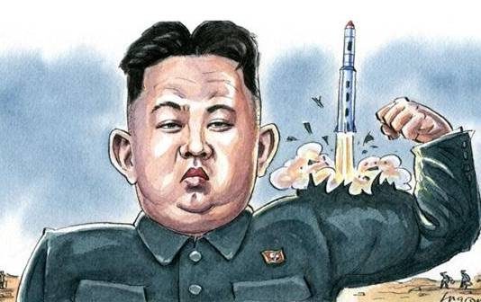
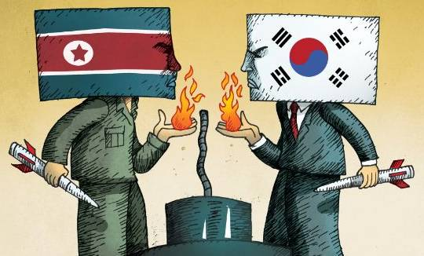
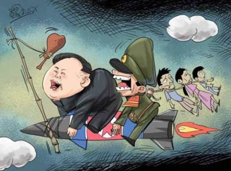
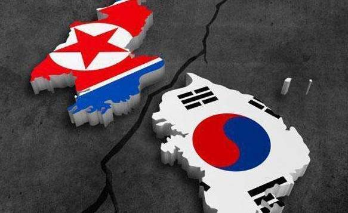

收录于合集
朝鲜半岛区域公共产品：超越朝核与“萨德”的综合考量
［摘要］
朝鲜第四次和第五次核试验搅动了东北亚局势，美韩借此蓄谋部署“萨德”，严重增加了区域紧张，导致了区域失衡。朝核与“萨德”根源在于朝鲜半岛区域公共产品的缺失，这一缺失主要源于朝鲜半岛政治经济结构的两大矛盾：安美经中”的二元结构分裂与竞争；南融北斥”的南北结构失衡。构建朝鲜半岛区域公共产品，概有 三个努力方向 ：力推美朝与南北关系正常化，构建中美朝韩四国外长会晤机制、中美朝韩四国首脑峰会；力推朝鲜半岛无核化，签署和平协议，构建中美朝韩共同治理和平委员会；力推半岛南北平衡发展，在“一带一路”战略框架下促成中朝自贸区。进而在此基础上，搭建一个强有力的制约性整合平台，即中美朝韩四国共管的朝鲜半岛区域合作组织——“跨半岛联合体”。“跨半岛联合体”不仅面临区域公共产品构建的共有困境，同时面临东北亚秩序的特有困局，若要破解这些困境，中美需将“新型大国关系”机制化、推动双边同盟体系转型和构筑“共同外部威胁”意识，同时借鉴东盟与上海合作组织等模式，组建一套完备的“跨半岛联合体”体系，以共建、共享朝鲜半岛安全、和平与发展。
［关键词］
朝核问题； “萨德”；区域公共产品；共同安全；中美“新型大国关系”；六方会谈；“跨半岛联合体”
01
引 言

2016年朝鲜第四次和第五次核试验引发了剧烈的地缘震动。中国提出“无核停和”并行谈判思路。美韩打着防御朝鲜导弹之名，蓄意在韩部署“萨德”，严重打破了东北亚地区战略平衡，损害了中国国家安全利益。继而韩日趁朴槿惠被弹劾面临下台的乱局，火速签订《军事情报保护协定》，东北亚版“小北约”呼之欲出，使东北亚版“古巴导弹危机”颇有愈演愈烈之势。中国对韩国的战略误判与政策误导给予严重关切和严词抗议，中韩关系遽然结冰。
“萨德”问题表面咎于朝核问题，实际源于朝鲜半岛区域公共产品的缺失，实质在于美国对中国的牵制与对冲。“萨德”其实是美国“楔子战略”和追求绝对自我安全的一环。冷战时期，美国曾利用“楔子战略”分化、削弱、破坏和瓦解苏联联盟，阻止其他国家与苏联结盟，以图分而制胜。当下，中美“新型大国关系”的建构尚没形成机制，更未消融这一战略。美国在东北亚插入朝核这一“楔子”，制造东北亚“安全困境”，疏离和分化东北亚各国间的关系，寻求在东北亚和朝鲜半岛的绝对控制权、主导权和话语权。韩国被植入“核威胁”的“楔子”，中国被植入“核泄漏”的“楔子”，朝韩因核问题由和解趋向对峙，中朝因核问题信任中有疑虑，“核”成为东北亚各国间政治互信的“心结”，东北亚合作与经贸联通严重受阻。继而，美国更是打出南北夹击两手，南生“南海”争端，北造“萨德”问题，将一个个“楔子”置于中国与周边国家之间。半岛局势因“萨德”问题，由原本南北之间的零和安全与博弈，升级为中美之间的安全困境与角力。
若从根本上化解“萨德”与“核”等诸类争端，中美需追根溯源，做出历史性的战略抉择与战略转变——提供朝鲜半岛区域公共产品，进而将之整合为一个强有力的区域组织——“跨半岛联合体”。
02
朝鲜半岛区域公共产品的现状

朝鲜半岛区域公共产品几近零状态，主要源于朝鲜半岛政治经济结构的两大矛盾：一是，“安美经中”的二元结构分裂与竞争；二是，“南融北斥”的南北结构失衡。所谓“安美经中”二元结构分裂，有两层含义：一是指在东北亚地区，美国掌控了安全垄断权，中国占据了经济优先权甚至领导权，形成中美分别引领东北亚政治与经济的格局。二是指韩国在中美之间左右骑墙，貌似处于“三明治”的尴尬境地，实则推行左右逢源的平衡术，既想搭乘中国经济发展的快车，又要依傍美国的“保护伞”，推行经济上倚重中国、安全上依赖美国的“双轨政策”。所谓“南融北斥”的南北结构失衡，是指在东北亚区域公共产品中，韩国完全融入和参与区域公共产品，而朝鲜却排斥或被排斥在区域公共产品之外，致使半岛南北在区域政治经济结构中存在严重失衡状态。这一双重二元结构分裂，致使朝鲜半岛区域公共产品难以成型。
半岛政治经济结构的二元分裂，从更深层次来看，在于半岛与周边国家间关系的失衡：中韩战略合作伙伴关系与美韩同盟关系的失衡，中韩战略合作伙伴关系与中朝同盟关系的失衡，美国为首的双边同盟体系与中国倡议的多边安全体系的失衡。有学者认为，美国主导的双边同盟体系“兼容共存”了中国主导、俄国赞成的多边安全合作体系，冷战后中美间的新平衡替代了冷战时南北三角的对峙平衡。实际上，中国主导的多边安全体系力量尚很薄弱，缺少一个强有力的保障“多边安全”的机制与平台，难与美国主导的双边同盟体系相抗衡与匹敌。美国“重返亚太”与双边同盟体系日益加强，严重冲蚀了中国倡导的多边安全体系。“萨德”与“南海非法仲裁案”即是美国双边同盟体系对冲中国多边安全体系的例子。
再者，中韩关系的级别定位注定会在安全问题让位于美韩关系与中朝关系。安全利益事关生存，同盟关系自然优先于战略合作伙伴关系。美韩同盟使中国对韩国有种疑虑，中朝同盟使韩国对中国心存戒备，中韩之间一直存在美国与朝鲜这两个不确定变量，有一种难以突破的隔阂。韩国试图以“安美经中”策略予以平衡，在双重依赖的基础上实现双向牵制，即经贸上依靠中国牵制美国，安全上依靠美国牵制中国。但实际上韩国的外交政策存在严重偏向与倾斜，因为“安美经中”本身来说就是一种失衡，即经贸与安全上倚重国家的不一与分裂。当朝鲜半岛局势缓和时，韩国多将经济利益摆在台前，中韩经贸热度升温，大有“亲中疏美”之势。但一旦当韩国的安全利益受到冲击或受损时，中韩之间的经济利益就为之让路，美韩安保体系的西风以绝对优势压倒中韩经济互利的东风，韩国完全倒向自己的同盟——美国。特别在朝核问题上，韩国在对中国寄予希望的同时，真正依靠的还是美国，甚至借助美国向中国施压。即便中韩曾有朴槿惠政府与中国政府的“蜜月”，也难以替代美韩之间“长相守”的根深蒂固。“萨德”问题鲜明地暴露出中韩之间政治互信的薄弱，暴露出韩国在安全上对美国的严重依附。不管中韩经贸互信的级别如何之高，都难以超越美韩联合军演之间的互信。
就当前朝鲜半岛局势来看，北方陷入难以自拔的发展“泥潭”，南北双方陷入自相摧残的“安全困境”，若要改变朝鲜半岛的二元结构分裂及半岛与周边国家间关系的失衡，半岛急需“安全”与“发展”这两大公共产品。为了半岛安全，中国以区域公共产品与区域安全理论为依托，倡议符合各方需求的多边安全体系——六方会谈。从六方会谈的议题与各议题的主导国来看，六方会谈确实关切了各方的利益需求，尊重了各方的话语权与主导权。但在各方进行利益协调时，却陷入了“猎鹿博弈”的困境。只要一方不合作，各方所共同围猎的“鹿”就会从不合作一方的缺口中逃掉。而且，在“安美经中”二元格局下，中美在区域公共产品供应上处于竞争状态，美国不仅不愿中国在区域安全公共产品上分享它的安全垄断权，也不愿看到中国在区域经贸产品上出现垄断倾向，试图多方围堵与遏制。如，以“萨德”加强双边同盟，巩固地区安全垄断地位，以TPP分化“一带一路”和亚投行，弱化中国在东亚的经贸权力，试图进而垄断东亚区域经贸的权力，变“安美经中”的二元格局为“经美安美”的垄断格局。所以，美国对中国提议的各方共同建设、共同分享东北亚安全权力的六方会谈框架并不满意，怕中国分享和打破它在东北亚安全公共产品上的垄断地位，在跟朝鲜谈判核问题、关系正常化问题时，处处设障，致使朝鲜退出六方会谈。在半岛，任何被怀疑具有或强化中国色彩的区域公共产品都易被阻挠或拆台，这不仅造成朝鲜半岛国家面临“选边站”的困境，而且造成朝鲜半岛区域公共产品有效提供者的缺失，致使半岛问题日益严重，以致酿成“萨德”入韩的局面。
为了半岛的和平与稳定，中美需放下“自我安全”的零和思维，换位思考“萨德”对地区安全与平衡的冲击，共同向朝鲜半岛提供区域外交、安全、经贸公共产品，化竞争为协调，化危机为机遇，寻求共同安全与共同发展之路。
03
朝鲜半岛区域公共产品的架构

在区域合作机制内，成员国之间身份平等、政治互信、经济互惠、利益共享、安全共建，更易于化解各方身份和利益建构的错位问题，而且，区域公共产品的机制与制度更具针对性、更切合本地区的需求。对于朝鲜半岛区域公共产品，本文认为概有几个努力方向：一要力推美朝双边关系正常化，构建中美朝韩四国外长会晤机制、中美朝韩四国首脑峰会，化敌对为联通，使邻睦，实现朝鲜半岛区域外交公共产品的突破；二要力推朝鲜半岛无核化，中美朝韩签署和平协议，结束停战体制，构建中美朝韩共同治理和平委员会，加强危机与争端的管控与治理，使邻安，实现朝鲜半岛区域安全公共产品的创立；三要力推半岛南北平衡发展，在“一带一路”战略框架下促成中朝自贸区，并使之与RECP相对接，使邻富，实现朝鲜半岛区域经贸公共产品的推进。
（一）朝鲜半岛区域外交公共产品
对朝鲜半岛问题，中国一直在持之以恒地为之付诸努力，经历了“同盟者”、“中间人”、“调停者”与“负责任大国”的角色变化。对于美朝关系正常化问题，中国本着“睦邻”的目的，自中美关系缓和之后，从“交叉承认”议案的再倡议到六方会谈美朝关系正常化工作组的成立，一直多番斡旋与撮合。在中韩建交时，中国试图以“交叉承认”议案为依托，促使美朝关系正常化，但被美韩拒绝。朝核问题凸显之后，中国又试图通过六方会谈促使美朝建交，力促美朝建立政治互信，但因美国将之与朝鲜弃核挂钩，又未能实现。
美朝关系是否有魄力从敌对转化为正常，中美关系是否有能力从竞争转向合作，中韩关系是否有智力超越朝核问题，这取决于四国间外交大战略的定位与谋划。奥巴马“埋葬美洲冷战最后的残留”，实现了美古关系正常化，朝鲜半岛更需要美国埋葬亚洲最后的冷战残留，在半岛“种一朵白玫瑰”，推进美朝关系正常化。若美朝关系实现正常化，从僵化思维来看，美韩同盟与驻韩美军将从理论上失去存在的基础，这也是美朝关系正常化的障碍之一。但如果四国致力于构建朝鲜半岛区域外交公共产品，如中美朝韩四国外长会晤机制、中美朝韩四国首脑峰会等，驻韩美军若不撤离，可以转型，与中朝韩军整编组建成朝鲜半岛区域合作组织的“保障力量”，维护区域安全与和平。若此，驻韩美军将不再是美朝关系正常化的障碍，而成推动力量。所以，一个正常的、互不侵犯的美朝关系将会兼容驻韩美军，敌对状态下的美朝关系反而会使朝鲜对驻韩美军心存疑惧，增加朝鲜的不安全感，进而推进核开发与核试验，造成朝鲜半岛局势的紧张与动荡。
（二）朝鲜半岛区域安全公共产品
冷战期间，苏中朝“北三角”与美日韩“南三角”虽然对峙，但维持了半岛的安全平衡。苏联解体打破了这一平衡，东北亚政治格局由三对三走向三对一（美日韩对朝鲜）。即便是“南三角”最弱的一方韩国对朝鲜，双方实力对比也已严重失衡，更何况美朝之间，朝鲜半岛安全格局极度失衡。在半岛安全格局严重失衡状态下，美韩拒绝跟朝鲜实现政治和解，拒绝跟朝鲜签订和平协议以结束“准战争”状态。最终，核成为朝鲜生存与安全的“保护伞”，成为重拾半岛安全平衡的“附加物”。核的负外部性威胁到韩国、日本、中国甚至美国。虽然美朝曾一度达成《核框架协议》，然双方均不兑现协议，美国更是一再加强美韩军演，加剧战争威胁，试图以高压措施逼迫朝鲜弃核，导致朝核问题长期化、常态化与复杂化。美国作为全球霸主，介入朝鲜半岛事务，却拒绝给弱国一个安全承诺，维持一种“不战不和不谈”的僵局。
中国本着“安邻”的目标，一直支持美朝双边会谈、“三方会谈”、“四方会谈”直至“六方会谈”，力促朝鲜弃核，力促驻韩美军核武器的撤离，力阻韩国的核武诉求，力图消除半岛的核威胁，力推半岛利益攸关方在谈判桌上和平解决争端，反对武力威胁与使用武力，“坚定主张朝鲜半岛不能有核武器，必须实现无核化；坚定主张半岛不能战、不能乱，必须通过谈判推进无核化；坚定维护中国的国家安全和正当利益”。虽然朝鲜半岛无核化是有关各方的共同责任，但由于集体行动的困境，各方都想“搭便车”，没有任何一方愿意为朝鲜的生存与安全买单，愿意为核的负外部性买单，愿意替代核这一“安全平衡角色”。充盈的搭便车者意味着公共产品的供应不足，致使六方会谈构建的多边安全体系缺失有效提供者，缺失有效制约机制。六方会谈就朝鲜弃核后的补偿、补救与保全措施提供不足，即没有寻求到核这一安全平衡“附加物”的替代者，没有建立完善的、可信的区域安全体系，这很难令朝鲜信服。韩国又乱中添乱，“萨德”问题雪上加霜。
若化解当前困局，中美朝韩应首先签订和平协定，替代《停战协定》，从法理上结束朝鲜战争，消除半岛“准战争”状态。进而，四国为朝鲜半岛构建一个共同安全机制——共同治理和平委员会。在共同治理和平委员会主导下，协商朝鲜半岛无核化问题，保障半岛正当的安全需求，维系半岛的安全平衡。事实将会证明，朝鲜半岛和平协议将会改变东北亚政治经济格局和半岛安全困境。从中美在“萨德”问题上的严重分歧来看，中国在向韩国施压的同时，更应向美国交涉，呼吁向朝鲜半岛提供安全区域公共产品，这未尝不是避免半岛军备竞赛升级、替代核“安全平衡角色”的有效方案。
（三）朝鲜半岛区域经贸公共产品
对于南北发展不平衡问题，中国本着“富邻”的初衷，推行南北均衡外交，在对韩经贸实现飞跃发展的同时，力促中朝贸易实现突破。对朝积极加强与拓展中朝经贸合作与人道主义援助，援建中朝鸭绿江大桥和新义州—平壤高速公路，力推“借港出海”项目，力促中俄朝边境开发，朝鲜相应地与中国达成共同开发和共同管理罗先经济贸易区和黄金坪、威化岛经济区的相关协议。对韩实施“一带一路”与“欧亚倡议”的对接，力推中韩FTA的落地。“一带一路”战略规划构建了六大经济走廊，形成推动亚洲区域一体化的“四环外交”，貌似实现了中国周边外交的全覆盖，实则缺少一“角”：朝鲜，成为“一带一路”战略的短板。朝鲜地处东北亚的中心，是韩日联通中俄与欧亚的唯一陆上通道和重要枢纽。朝鲜的缺位增加了中韩经贸战略对接的成本与实施效果，成为中国提供的区域经贸公共产品的缺口。孤立的朝鲜经济难以实现“内发性”的“改革开放”，孤立朝鲜的区域合作更使朝鲜经济难以受到“外促性”的“涓滴效应”。一个不富裕、不发展的国家，更易走向国家发展的内卷化，更易追求政权安全与国家安全的绝对化，更易增加地区的不安定性与国家间的隔阂。朝鲜在区域公共产品领域的缺位，不仅使朝鲜半岛问题久拖不决，使韩国的“欧亚倡议”形同纸上谈兵，也使我国的“一带一路”战略存在东北亚“缺口”和断裂带，使中国图们江入海口通道严重受阻。中国应加强与朝鲜“四点两线”开放战略的密切对接，加强中俄朝罗津、哈桑和珲春三角洲多边开发合作，寻求朝鲜半岛大陆桥、西伯利亚大陆桥与新亚欧大陆桥的联通，引导朝鲜参与中俄朝韩区域合作，寻求中朝自贸区的创建，将朝鲜纳入到“一带一路”和亚投行中来，力促南北政治和解、南北平衡发展与南北互联互通。
鼓励与支持朝鲜参与区域公共产品，韩国同样具有不可推卸的责任与义务。韩国政府的明智之举与长远之策应是放弃孤立和围堵朝鲜，引导朝鲜逐步参与区域合作与区域公共产品中来，以打通“欧亚倡议”的“丝绸之路快线”。施压朝鲜，更易加剧南北隔绝与对峙，加剧南北发展不平衡。在朝鲜半岛区域公共产品中，韩国收益将会大于成本。因为朝鲜半岛区域公共产品将会大大缓和朝鲜半岛局势，韩国既可从中收获经济利益，获取区域规则与区域组织的话语权，又能摆脱安全困境，撕裂安全上完全依赖美国的魔咒。一个发展、富裕和融入国际社会的朝鲜，不可否认，可能会成为韩国强有力的竞争者，特别在统一问题上，韩国惧怕被吸收统一，但从另外一个方面来看，发展、富裕和融入国际社会的朝鲜更利于朝鲜半岛的和解、发展、稳定与统一。在南北发展平衡、双方经济对等下，双方将会更倾向于选择和平统一而非武力统一、对等统一而非吸收统一。一个安全、繁荣、南北平衡发展的朝鲜半岛相对于一个动乱、贫穷、南北贫富分化的朝鲜半岛对韩国会更有利。但韩国因不愿看到朝鲜受益而因噎废食，在封堵联通朝鲜大门的同时，也关闭了解决朝鲜半岛问题的窗户。
综上可见，朝核、“萨德”与南北发展不平衡等问题的核心点在于半岛缺失共同安全与共同发展的平台与机制，所以朝鲜半岛区域外交、安全与经贸等公共产品的搭建甚为亟须。为了避免各类区域公共产品的分散性和缺失制约性，需将之整合为强有力的综合治理平台。
04
朝鲜半岛区域合作组织 ——“跨半岛联合体”
搭建区域公共产品的治理平台与组织机构，不仅需要内向性的理论分析与架构设计，而且需要外向性的比较与借鉴，不仅需要单一性区域公共产品的构建与促进，而且需要综合性区域公共产品的供给与整合，不仅需要单个国家独自提供、共同分享，而且需要相关利益国合力供给、共同管理。
（一）“跨半岛联合体”的构想
鉴于东盟与欧盟等国际组织的经验及集体行动的困境理论，朝鲜半岛区域公共产品的整合平台宜起步于小范围少数国家，然后逐步扩容。
从理论上来说，奥尔森认为，除非一个集团中的成员数很少，或者存在强制或其他某些特殊手段促使成员按照他们的共同利益行动，否则，理性的、自利的个体将不会采取行动来实现他们共同的或集团的利益。基于公共产品的外部性或说外溢效应，公共产品会使供给者与消费者之外的第三者意外受益或受损，集团中的成员是否有动力提供公共产品是由其“收益份额”决定的，国际公共产品的提供是各国权衡“性价比”的结果。集团规模越大，成员就越不能在最优水平上自愿供给公共产品，更愿意“搭便车”而不是贡献公共产品，因而大集团存在无法采取集体行动、不能提供任何数量公共产品的倾向，这一观点被称为“零贡献命题”。与大集团相比，小集团具有不同的集体行动特性，即使不采用强制手段或实施选择性激励，小集团也能够摆脱集体行动的困境。在小集团中，成员在集体利益中所占的份额比较大，成员之间能够相互沟通并达成合作协议，他们具有较强的动力自愿采取集体行动。所以，在小区域、小范围内，区域内相关国家共同生产和提供满足共同需求的区域公共产品，而非由霸权国一国供给，可以避免全球性公共产品中普遍存在的“搭便车”现象，国家间更易达成联合行动的共识，更易进行有效地监督，有效地提供公共产品。
从实践上来看，东盟起始于马来西亚、菲律宾、泰国三国，后扩至10国，并建立与域外大国的合作机制，欧盟起始于德法两国，后扩至28国。朝鲜半岛区域公共产品的整合机构宜起始于中美朝韩四国，成立“跨半岛联合体”。跨半岛联合体”将有一套类似欧盟与东盟的严密的组织章程和基本架构，如领导人峰会、常务委员会、秘书处、外长会议、部长会议等。领导人峰会为最高决策机构，成员国轮流担任主席，常务委员会为执行机构，成员国轮流任秘书长，下设外交、安全、经贸等委员会，外长会议，部长会议等，协商相关领域的热点议题。在此大框架下，探讨区域合作与发展，管控区域争端与危机，提供区域安全与经贸等公共产品。
半岛浮现出的朝鲜由“求核自保”到“拥核自重”的局面，除了熟知的诸多原因与难题，关键原因也在于区域公共产品的缺失与区域危机管控平台的泛化。如，日本在六方会谈中的角色不是责任的共同承担者，而是麻烦的制造者，日本的“人质绑架”问题甚至朝日关系正常化问题，不宜放到六方会谈的层面来谈。六方会谈仅因某一国家的退出就陷入停顿，其非机制化的脆弱性严重影响了它的有效性与公信力，这也说明朝鲜半岛问题宜在强有力制约性的常设机构平台内磋商。跨半岛联合体”则是更具针对性、更有切合力和更有约束力的机制。
（二）“跨半岛联合体”的困局
“跨半岛联合体”的搭建除了区域公共产品理论所论及的共性困境外，还存在一些特有障碍。
第一，中美二元竞争格局。朝鲜半岛问题始于美苏争霸，纠结于中美二元竞争格局。冷战结束后，东北亚“南三角”与“北三角”对峙的冷战残余思维依然存在。韩国依持美韩同盟与驻韩美军叫板朝鲜，朝鲜依仗中朝同盟与核武对抗韩国，当域内国家联合域外国家对抗本区域内国家时，区域共同体的建立无疑难上加难，这成为“跨半岛联合体”的软肋。所以，“跨半岛联合体”首先须超越冷战思维，克服中美二元竞争格局与朝韩南北对峙局面。中美“新型大国关系”与南北和解是“跨半岛联合体”的政治基础。在朝鲜半岛问题上，当前美国的政策更似一种恶性零和博弈游戏，短期来看，美国制约了中国，但长远来看，损人不利己，美国“亚太再平衡”战略日益折射出美国亚太战略的困境。在国际秩序大变局的分岔口，中美均须保持冷静，推动在合作中共赢互利、在竞争中良性互动。中美“新型大国关系”与“跨半岛联合体”是互为前提条件的关系，若“跨半岛联合体”得以成立，它将成为落实和保障中美“新型大国关系”的得力制度与组织，也必会进一步巩固中美“新型大国关系”。
第二，朝鲜半岛的结构性矛盾。在跨朝鲜半岛区域，国家发展差距悬殊，大国与小国并存，强国与弱国兼有，发展水准不一，经济体量不对等，政治意识形态冲突，国家间关系错综复杂。四国相互之间，多不是一种正常国家间关系，如，美朝关系敌对化、韩朝关系民族化、中朝关系敏感化等。美朝关系一直延续冷战思维与逻辑，双方不仅没有建交，而且处于敌对状态。朝韩之间一直不承认是国家间关系，而是民族内部关系，两国统一是双方的共同目标，勿论建交，双方火星化的军事冲突成为常态。中朝两国在冷战后走向似盟非盟状态，关系变得脆弱和敏感化。这种非正常国家间关系成为朝鲜半岛的结构性矛盾，是“跨半岛联合体”的障碍。如何让处于非正常国家间关系的各国之间建立政治互信，如何将之糅合在一个区域合作组织里，共同管理半岛安全、发展与危机问题，确非易事。
第三，“共同外部威胁”意识的缺乏。一般来说，国与国之间，不管双方有多少利益纠纷与制度分歧，在面对“共同外部威胁”时，易于超越或搁置国家间争端，做出妥协与让步，形成某种形式的联盟，如二战时期美苏战时同盟关系。在美国被日本偷袭之前，美苏之间存在难以苟合的意识形态冲突，共产主义与资本主义对峙严重，而且二者间曾有美国参与苏俄内战、图谋推翻列宁政权的芥蒂。但为了对付“共同外部威胁”——德意日法西斯轴心同盟，双方结成反法西斯同盟。一旦“共同外部威胁”消失，美苏之间争夺势力范围的矛盾与分歧就凸显出来，它们在欧洲划割东西德，在半岛划分南北朝鲜，战时同盟走向崩溃。
“跨半岛联合体”的四国之间不仅没有“共同外部威胁”意识，反而互视威胁，相互防范，如，美韩视中朝为威胁，朝鲜视美韩为威胁。美国对华实行“接触加防范”战略，对亚太实行“均势加威慑”战略。“中国威胁论”与“朝鲜威胁论”并非是单纯的意识形态作用的结果，而是意识形态的防御性与进攻性兼容的反应，是美国的一种政策手段，是其在具体地区战略调整和大国关系重组过程中提供目标和方向的推进剂，更是其具体利益估算和诉求的结果。美国这一战略手段的运用，成为中美合作的战略障碍，并非短时期内可以改变。所以，四国间不仅难以建构共同利益和共同目标，也难以消除相互间的互视威胁和树立它们的“共同外部威胁”，这是“跨半岛联合体”得以成立、巩固与持久的两条生命线。
（三）“跨半岛联合体”的可行路径
“跨半岛联合体”看似不切实际，有着诸多无法超越的障碍与困境，但朝核问题日益严重，“萨德”部署又在搅局，亟须标本兼治的大举措，“跨半岛联合体”乃是时势所需，其养成可从以下几点逐步切入：
第一，培养跨越时代局限之创新思维。若要化解中美二元竞争格局，双方需有跨越时代局限的创新思维。霸权更替即便如“修昔底德陷阱”所言（大国争霸必战），然历史表明，争霸之战并非皆在新旧霸主之间。如20世纪的霸主从英国过渡到美国，经历了二战，但二战期间英美是同盟国而非敌对国。可见，崛起大国并非必然是守成大国的挑战者，现有秩序的不满者或受限者更易成为霸主的挑战者，这也是中国一再倡导“新型大国关系”的历史基础。超越“修昔底德陷阱”的陈旧逻辑，中美双方可增进政治互信，着力推进“跨半岛联合体”。“跨半岛联合体”平衡各方安全与利益，为朝鲜半岛无核化、美朝关系正常化、南北发展不平衡等诸多问题的解决提供基础、前提与制度保障。给予朝鲜“跨半岛联合体”这一“安全保护外壳”，即中美朝韩平等参与、共同管理的常规性区域合作机制，它才会逐步融入国际社会，逐步弃核，逐步改善民生，发展经济。
第二，推动同盟功能的转型。对于同盟体系，有些学者主张将之转型为类似东盟地区论坛一样的地区安全机制。这与本文所倡导的提供朝鲜半岛区域公共产品的理念很接近。从区域公共产品与同盟的关系来说，同盟同时提供防御性公共产品与遏制性公共产品，对同盟成员负荷较重。防御性公共产品不同于遏制性公共产品，前者用于同盟成员受到攻击时提供保护，后者用于同盟成员免于被攻击，遏制性公共产品才属于真正的公共产品。在朝鲜半岛，同盟体系更是把双刃剑，一方面维持了半岛的“冷和平”，另一方面，增加了地区的不安定性与对抗性。不管是从成本收益理论来看，还是从朝鲜半岛现状来看，半岛更需要适合于本地区的遏制性区域公共产品，以免遭受战乱。所以，美韩同盟的功能宜于转型，应成为地区安全与稳定的维护者，而非地区“准战争”的肇事者或刺激者。同盟的功能一旦转型为地区和平力量而非对抗力量，朝鲜半岛结构性矛盾的存在基础也将大大动摇。
第三，对核威胁进行再认知。从国家利益层次来看，“基本次序是民族生存、政治承认、经济收益、主导地位、世界贡献”如果一个国家连生存与安全这一最低利益需求都保障不了，就很难期望它能致力于经济发展。弃核不应是建立区域安全保障体系的先决条件，而应是在区域安全保障体系下的承诺与兑现。对于核威胁的认识，目前基本上局限于认为朝鲜是核威胁的唯一施动方，没有将“核战争”与“核扩散”提升为中美朝韩共同面对的“外部威胁”。中美韩朝宜避免追求自我利益最大化，相互协调，相互合作，将核的单方面责任与单方面威胁意识提升为“共同外部威胁”，共同建构朝鲜半岛安全保障。韩国宜搁置“先弃核后合作”的政策，改变围堵朝鲜和“急进统一”的战略。朝鲜宜实现自我突破，实施弃核开放战略，将重心转到经济改革与民生改善上，放开胸怀积极参与到区域合作中来。但弃核之路是漫长的，不是一蹴而就的，应在共同安全机制内推行，而非在缺失共同安全体系下的“裸弃”。
第四，勇担区域“主角”。朝鲜半岛是检验中国周边外交成效的试验田与示范区，朝鲜半岛区域公共产品是中国周边外交战略与朝鲜半岛问题对接的平台与突破口。中国虽一再宣示“睦邻、安邻、富邻”等周边外交政策，一再宣示要破除“国强必霸”的陈旧逻辑，但仍有一些舆论认为，中国的外交宣示与外交实践存在一定的出入，对中国能否真正做到“亲、诚、惠、容”心存疑虑，惧怕中国的周边外交理念和战略是朝贡体系的翻版。朝鲜半岛的不稳定系数，成为中国周边外交战略与政策的“短板”和困境。在朝鲜半岛落实“睦邻、安邻、富邻”政策，让周边与世界分享中国发展与崛起的和平红利，为中国周边外交战略打造一个良好的邻里环境，需要中国逐步变通“不当头”战略，在朝鲜半岛负起大国责任与担当。
另外，地区不稳定会使区域内主导性国家遭受极其有害的后果，区域内弱势群体会使主导性国家处理区域内不稳定状态、管控危机与治理市场失灵的成本增加，政策效益大打折扣。所以，一般来说，区域内主导性国家会力求资源配置的纳什均衡点，更愿提供区域公共产品，让区域内的弱势群体搭便车，以维持地区稳定。从成本与收益来说，对于区域公共产品与区域组织，在承担成本的同时，也意味着享有区域秩序重组的垄断性权益，如国际规则与国际机制的主导权与话语权。因此，中国更应做区域公共产品的有效提供者，顾及朝鲜安全、经贸的异质性与脆弱性，承担较大成本和做出较大贡献，允许朝鲜根据自身实际情况，力所能及地负担相应权重的成本，甚至可以在一定时期内“搭便车”。
“跨半岛联合体”可与“一带一路”战略相对接。从“四环外交”论及的中国战略布局可知，在朝鲜半岛既没有经济走廊，也没有区域合作组织。“跨半岛联合体”与“中朝韩经济走廊”应成为“一带一路”战略的推进方向，将朝鲜纳入“一带一路”沿线支点国家甚为亟须。中国有推动“跨半岛联合体”区域组织的经验与能力，如上海合作组织。上海合作组织经历十余年的推动与发展，已形成诸如首脑峰会、总理会议、部长会议等良好而成熟的机制、运作模式与安全理念，其实践经验、组织建设与预防冲突机制等可以成为“跨半岛联合体”的范本与模版。在“跨半岛联合体”框架下，中国不仅可以化解家门口的战争威胁，还可以实现东北亚区域的合作与联通，促进中美“新型大国关系”的良性互动。
05
结语

朝核问题与“萨德”部署折射出的朝鲜半岛问题是一揽子综合问题，非细枝末节的措施所能解决，需要一个强有力的、运行有效的综合治理平台。“跨半岛联合体”是利益攸关方平等参与和共同管理的区域合作组织，是向利益攸关方提供安全保障、管控危机与发展机遇的机制依托。朝鲜半岛问题的聚焦点在朝鲜，高压围堵的措施只会使朝鲜半岛问题复杂化、长期化，激化对峙与对抗，而不是屈服与和解。韩国政府在遭遇“朝小野大”与朴槿惠被弹劾的乱局之后，宜放弃“统一攻势”，放弃“急速统一”、“吞并统一”等政策，放弃部署“萨德”的损人不利己措施，以免得了“萨德”，丢了中国，使中韩多年苦心经营的双边战略成果付之东流。美国总统特朗普宜改变奥巴马政府的“亚太再平衡”战略，抛弃所谓将提升中国进口商品关税的竞选宣传，与中国一道务实地推进“新型大国关系”的机制化，走出恶性竞争或此消彼长的零和博弈，在区域公共产品路径下融化中美之间的“冷和平”，继而实现“让美国再次伟大”的愿景。为了朝鲜半岛的安全与发展，在区域公共产品供给上，相关国家应抛弃前嫌，大国合力、中等强国尽力、小国出力。中美朝韩四国宜于“跨半岛联合体”战略框架下，以政治平等和经济让利的姿态与诚意将朝鲜纳入区域公共产品与区域组织中来，在接纳中潜移默化地促其变革，与之实现共同安全与共同发展。
“跨半岛联合体”相对于东北亚共同体来说，具有更多优势与可操作性。四国相对于六国来说，争端少，更易达成共识。六方会谈的停滞恰恰证明多国间共识的难度，证明大集团内集体行动的困境难以化解。东北亚区域最为棘手和最为危险的问题是朝鲜半岛问题，朝鲜半岛依然处于“准战争”状态，像一个随时被引爆的火药桶。解决朝鲜半岛问题，宜在当事国之间进行协商，抓大放小，抓核心放次要。待“跨半岛联合体”运营到一定的阶段，积累了一定的经验与公信力后，再将之扩容为东北亚共同体，进而与东盟联手，扩展至东亚共同体。这是一个先易后难，由初级到高级的过渡过程。“跨半岛联合体”将成为化解朝鲜半岛问题的有力机制保障与平台依托，成为东北亚区域合作和区域一体化的雏形与模式。 (作者：朱芹)
声 明
国政学人微信公众平台系非盈利学术平台。文章出自最新的南大CSSCI和北大中文核心来源期刊为。目的是方便广大学人进行学术研究，促进学术的传播和交流，不做任何商业用途。如有任何权利问题，请直接与我们联系。